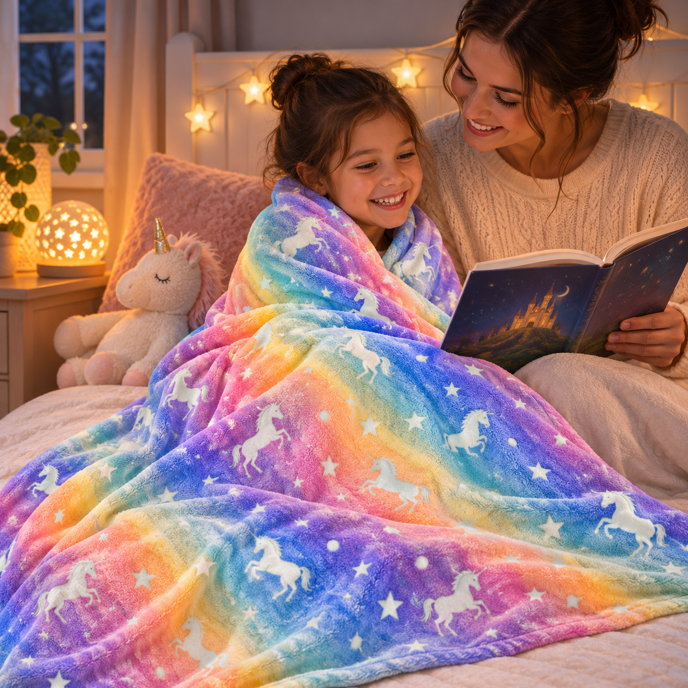

Pătură Pufoasă Fosforescentă pentru Copii cu Unicorni
Pătură pufoasă cu imprimeu multicolor de unicorni și stele fosforescente, pentru confort, relaxare și decorul camerei copiilor.
Prețul și stocul sunt afișate conform catalogului furnizat. Confirmă disponibilitatea, cantitatea și condițiile comerciale înainte de comandă.
DETALII PRODUS
Descriere
Pătura pufoasă fosforescentă pentru copii, cu imprimeu de unicorni și stele, este un accesoriu textil decorativ conceput pentru a combina confortul unei pături moi cu un efect vizual luminos în întuneric. Produsul se remarcă prin designul multicolor, inspirat din universul fantastic al unicornilor, și prin elementele decorative care pot deveni vizibile în condiții de lumină redusă.
Combinația dintre textura plușată, culorile pastelate și imprimeul fosforescent transformă pătura într-un accesoriu potrivit pentru dormitoarele copiilor, momentele de relaxare și activitățile recreative desfășurate acasă.
Aspectul decorativ este completat de nuanțe de roz, mov, albastru, turcoaz și galben, distribuite într-un model de tip curcubeu, peste care sunt imprimate siluete de unicorni, stele și alte elemente inspirate din povești.
1. Efect fosforescent – unicorni și stele care strălucesc în întuneric
Caracteristica distinctivă a păturii este imprimeul cu elemente fosforescente, concepute pentru a crea un efect luminos atunci când lumina ambientală scade.
În imaginile produsului se observă siluete de unicorni și stele care prezintă o strălucire verzuie în întuneric, evidențiindu-se pe fundalul întunecat al materialului.
Cum funcționează efectul luminos?
Elementele fosforescente sunt concepute pentru a absorbi energia luminoasă în timpul expunerii la o sursă de lumină și pentru a o elibera treptat în condiții de întuneric.
Acest principiu permite obținerea unui efect decorativ fără alimentare electrică.
Avantajele efectului fosforescent:
- Creează un decor luminos cu unicorni și stele.
- Oferă un efect vizual diferit față de păturile obișnuite.
- Nu necesită baterii sau conectare la priză.
- Poate adăuga un element distractiv rutinei de seară.
- Completează decorurile tematice ale dormitoarelor pentru copii.
- Oferă două aspecte vizuale: multicolor în lumină și luminos în întuneric.
Intensitatea și durata strălucirii pot varia în funcție de timpul de expunere la lumină, intensitatea sursei luminoase și caracteristicile materialului fosforescent.
2. Textură plușată pentru confort și relaxare
Suprafața moale și pufoasă reprezintă unul dintre principalele avantaje ale păturii, fiind concepută pentru utilizare în momentele de odihnă și relaxare.
Materialul textil prezintă o structură cu fibre scurte și dese, care creează un aspect catifelat și o senzație plăcută la atingere.
Flexibilitatea materialului permite așezarea păturii pe pat, canapea sau alte suprafețe destinate odihnei.
Pătura poate fi utilizată pentru acoperirea corpului în timpul lecturii, vizionării desenelor animate sau al altor activități recreative desfășurate în interior.
Caracteristicile materialului:
- Suprafață textilă moale, cu aspect plușat.
- Textură pufoasă și plăcută la atingere.
- Construcție flexibilă, ușor de pliat.
- Aspect decorativ multicolor.
- Material conceput pentru utilizări repetate.
- Format practic pentru depozitare și transport.
Compoziția exactă a fibrelor trebuie confirmată din specificațiile furnizorului.
3. Design curcubeu cu unicorni – decor inspirat din povești
Pătura se diferențiază prin imprimeul său fantastic, care combină unicorni, stele și degradeuri multicolore, realizând un aspect vizual atractiv.
Fundalul prezintă tranziții între mai multe culori, cu zone pastelate și accente intense.
Siluetele de unicorni sunt distribuite pe suprafața materialului, fiind completate de stele decorative de diferite dimensiuni.
În timpul zilei, pătura poate fi folosită ca accesoriu colorat pentru decorarea dormitorului, iar seara elementele fosforescente adaugă un efect vizual suplimentar.
Elementele decorative principale:
- Unicorni în diferite poziții.
- Stele de mai multe dimensiuni.
- Fundal multicolor cu aspect de curcubeu.
- Nuanțe de mov, roz, albastru și turcoaz.
- Detalii luminescente cu strălucire verzuie.
- Design inspirat din universul fantastic și poveștile pentru copii.
Modelul permite asocierea păturii cu perne decorative, lenjerii de pat și accesorii pentru camere de copii.
Comandă și informații
Site-ul funcționează în regim de catalog B2B. Nu există plată online sau coș de cumpărături.
Discută pe WhatsApp →DIN ACEEAȘI CATEGORIE